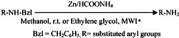

HTML by Rhodium
The selective deprotection of several N-Bzl amino derivatives to the corresponding amines and the removal of S-Bzl and O-Bzl groups from the protected amino acids with ammonium formate and commercial zinc dust are reported. Many other reducible or hydrogenolysable substituents such as halogens, methoxy, phenol, ester, acid, ethene, and Boc groups are unaffected.
The Bzl protecting groups are very popular for amines, alcohols, and thiols1,2. The facile removal of protecting groups from labile or reactive organic functionalities is an important objective. Although, a number of methods have been reported for debenzylation, catalytic transfer hydrogenolysis3-6, which involves a catalyst and hydrogen donor is the most commonly used method. The application of Pd/C with ammonium formate for the rapid debenzylation of N-Bzl amino derivatives3,7 has been reported. Although, catalytic transfer hydrogenation is a more effective deprotection procedure than catalytic hydrogenation, it has not been largely used as it must be carried out for relatively long times at reflux temperature with potential damage of particularly other hydrogenolysable functional groups8. The major disadvantage of this method being the use of palladium as catalyst, which is highly expensive and its pyrophoric nature makes it difficult to handle.
The use of low-cost metals such as magnesium9, zinc10, and lead11 as catalysts for the transfer reduction reactions was reported from our lab. The utility of magnesium as low-cost metal for the selective hydrogenolysis of some commonly used protecting groups in peptide synthesis was also reported12. There are no reports on the use of other low-cost metal as catalyst for the transfer hydrogenolysis of N-Bzl derivatives. In this context, we wish to report the conventional hydrogenolysis of N-Bzl, S-Bzl, and O-Bzl derivatives by using zinc dust and ammonium formate in methanol (Scheme 1).
Scheme 1
The deprotection proceeds in a selective and smooth manner but requires longer reaction time with moderate to good yields. Based on the reports on the microwave-induced organic reaction enhancement (MORE) chemistry techniques13 leading to reaction rapidity and quantitative yield has provoked us to test the feasibility of debenzylation under microwave irradiation in ethylene glycol. This method gives the corresponding products in good to excellent yields (85–95%). The deprotection can be accompanied within 2–3 min. This deprotection procedure has been employed successfully for a wide range of protected derivatives and the results are summarised in Table 1.
Table 1
Catalytic transfer hydrogenolysis of S-Bzl, O-Bzl, and N-Bzl groups with Zn/Ammonium Formate
| Substrate | Product | Reaction time (min) |
Yield (%)a |
mp (°C) |
Specific rotation [α]25D |
||||
C |
MW |
C |
MW |
Found |
Lit. |
||||
| Boc-cysteine (Bzl) | Boc-cysteine | 120 | — | 90 | — | 75–78 |
76–7815 |
||
| Boc-cysteine (4-Me-Bzl) | Boc-cysteine | 160 | — | 90 | — | 75–78 |
76–7815 |
||
| Boc-Thr (O-Bzl) | Boc-Thr | 200 | 3.0 | 80 | 95 | 152–154 |
154–15515 | ||
| Boc-Ser (O-Bzl) | Boc-Ser | 190 | 2.5 | 82 | 95 | 141–142 |
140–14215 |
||
| Boc-Tyr (O-Bzl) | Boc-Tyr | 200 | 3.0 | 79 | 92 | 135–136 |
136–13815 |
||
| C6H5NHBzl | C6H5NH2b | 150 | 3.0 | 75 | 90 | 182–184 |
184–18616 | — | |
| o-ClC6H4NHBzl | o-ClC6H4NH2c | 180 | 3.5 | 80 | 92 | 205–206 |
20816 | — | |
| p-ClC6H4NHBzl | p-ClC6H4NH2 | 170 | 2.5 | 80 | 93 | 70–71 |
7216 | — | |
| p-MeOC6H4NHBzl | p-MeOC6H4NH2 | 180 | 2.8 | 80 | 89 | 56–58 |
5716 | — | |
| o-MeOC6H4NHBzl | o-MeOC6H4NH2 | 190 | 3.0 | 75 | 92 | 58–60 |
6017 | — | |
| p-MeC6H4NHBzl | p-MeC6H4NH2 | 180 | 3.0 | 75 | 95 | 46 |
4517 | — | |
| m-HO2CC6H4NHBzl | m-HO2CC6H4NH2 | 170 | 3.5 | 75 | 80 | 173–174 |
17417 | — | |
| p-HOC6H4NHBzl | p-HOC6H4NH2 | 190 | 3.0 | 80 | 90 | 186–188 |
18616 | — | |
| α-C10H8NHBzl | α-C10H8NH2 | 150 | 3.5 | 85 | 92 | 49–50 |
5016 | — | |
| β-C10H8NHBzl | β-C10H8NH2 | 170 | 3.0 | 78 | 90 | 110–112 |
111–11316 | — | |
| 4-C5H4N=NHBzl | 4-C5H4N=NH2 | 120 | 2.5 | 80 | 95 | 157–159 |
158–16017 | — | |
| p-AcOC6H4NHBzl | p-AcOC6H4NH2d | 130 | 2.0 | 80 | 93 | 148–151 |
15017 | — | |
| o-BrC6H4NHBzl | o-BrC6H4NH2 | 150 | 2.5 | 80 | 85 | 115–118 |
11617 | — | |
Notes:
Bzl; -CH2C6H5, C; conventional method, MW; microwave irradiation method.
All the products were characterised by comparison of their TLC, melting points, IR spectra, 1H-NMR spectra, and specific rotation wherever necessary with authentic samples. Studies were also carried out to determine the optimum conditions for deprotection. An excess of 2-4 equiv. of ammonium formate (per protecting group) was found to be ideal. We observed the optimal ratio of zinc catalyst to substrate to be 15 by weight for each protecting group to be removed. Methanol was most preferred solvent of choice for conventional method while ethylene glycol in microwave-assisted deprotection.
In summary, we are reporting a new transfer hydrogenolysis method for the deprotection of N-Bzl, O-Bzl, and S-Bzl derivatives using zinc dust with ammonium formate. During this process many other reducible or hydrogenolysable substituents such as halogens, methoxy, phenol, ester, acid, ethene, and Boc groups are remain unaffected.
Materials
All protected amino acid derivatives were purchased from Advanced Chem. Tech., (Louisville, KY). Some of the N-Bzl amino derivatives were prepared in our laboratory according to standard procedure15. Ammonium formate and zinc dust (particle size <45 µm) was purchased from E-Merck Mumbai (India) Ltd. All the solvents used were analytical grade or were purified according to standard procedures. Thin layer chromatography was carried out on silica gel plates prepared by following the standard procedure and detected by UV light. The melting points were determined by a Selaco Can.No103 Melting point apparatus and are uncorrected. The optical rotation were determined on a Perkin–Elmer 241 MC Polarimeter, IR spectra were recorded on a Shimadzu FTIR-8300 spectrometer. The>1H-NMR spectra were recorded on an AMX-400 MHz spectrometer using CDCl3 as solvent and TMS as internal standard. A commercial, domestic microwave oven (LG little chef model 194A) operating at 2450 MHz frequency was used in all experiments.
Conventional Deprotection
A suspension of substrate (10 mmol), ammonium formate (20 mmol), and zinc dust (2 mmol) in methanol (15 mL) was stirred at room temperature, under nitrogen until the completion of the reaction. After the completion of the reaction (monitored by TLC), the reaction mixture was filtered through celite pad, washed with solvent and then the combined filtrate and washings were evaporated under vacuum. The residue was taken into chloroform or ether, washed twice with saturated brine solution and finally with water. The organic layer was dried over anhydrous sodium sulphate, filtered and evaporation of the organic layer followed by purification either by preparative TLC or by column chromatography.
Microwave-Assisted Deprotection
A suspension of substrate (10 mmol), ammonium formate (20 mmol), and zinc dust (2 mmol) in ethylene glycol (15 mL) in an Erlenmeyer flask was allowed for microwave irradiation 160 power. A filter funnel was placed over the Erlenmeyer flask to prevent any accidental spillage. A “heat sink” was maintained to control the microwave energy input into the small-scale reaction mixture. After the reaction, the reaction mixture was cooled and then filtered. The filtrate was diluted with water and extracted with ether or ethyl acetate, and the organic layer was washed twice with saturated brine solution and finally with water. The organic layer was dried over anhydrous sodium sulphate, filtered and evaporation of the organic layer followed by purification either by preparative TLC or by column chromatography.